Visi & Misi
Visi
Menjadi klub sepak bola profesional yang mencetak pemain berbakat, berkarakter, dan berdaya saing tinggi di tingkat nasional maupun internasional.
Misi
- Menyelenggarakan pembinaan usia muda yang terstruktur dan berkelanjutan.
- Membangun mentalitas juara berlandaskan sportivitas dan disiplin.
- Fasilitasi pengembangan bakat melalui kompetisi berkala.
Riwayat Pertandingan
Turnamen Futsal WBL Cup 2026
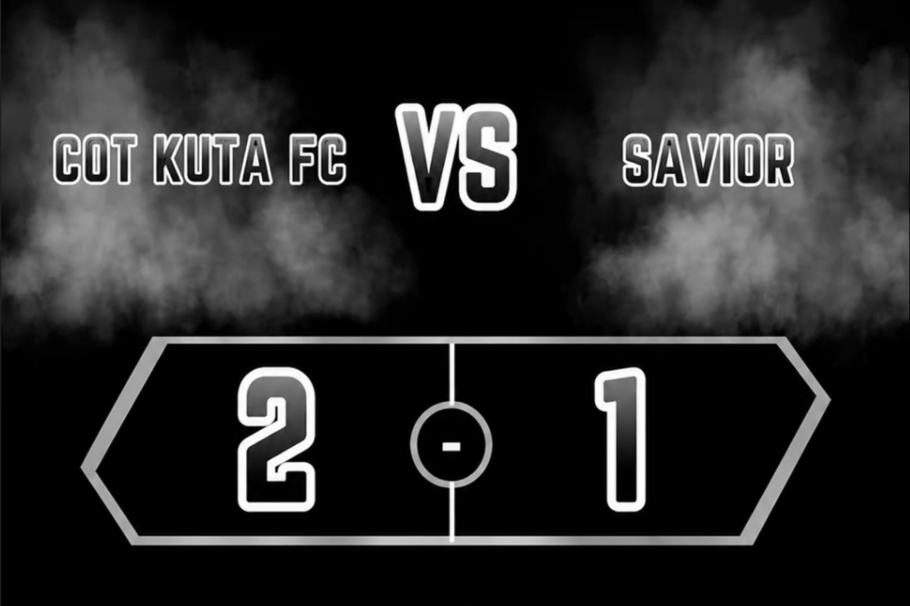
2-1 Win Cot Kuta
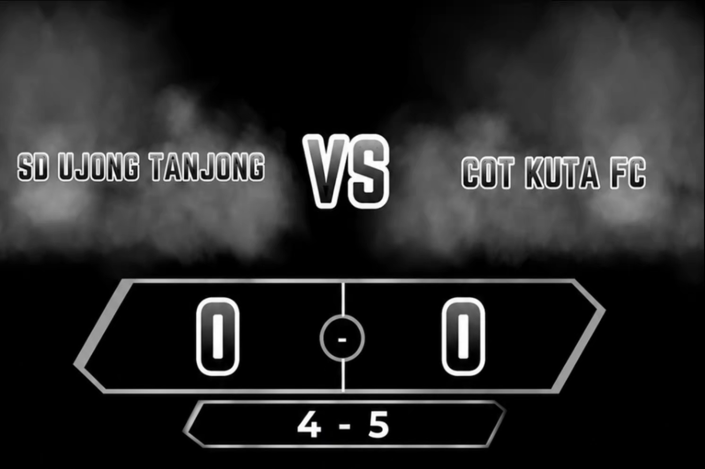
4-5 (Pinalti) Win Cot Kuta
Struktur & Pembinaan
Manajemen Klub
Ketua Umum: Abdul Razaq
Coach: Ulkaf Ari Anggara
Asisten Coach: Muhammad Fazil
Program Pembinaan
Sepak Bola: Fokus pada peningkatan fisik terprogram, taktik posisi bermain, kerjasama tim, serta keikutsertaan dalam kompetisi terarah.
Futsal: Memahami sistem rotasi pemain, positioning, serta variasi formasi bertahan dan menyerang.
Jadwal Latihan
| Hari | Waktu | Kategori | Lokasi |
|---|---|---|---|
| Selasa | 15:30 - 17:00 WIB | Akademi (U-12 / U-15) | Lapangan Gampong Darat |
| Kamis | 15:30 - 17:00 WIB | Akademi (U-12 / U-15) | Lapangan Gampong Darat |
| Sabtu | 15:30 - 17:00 WIB | Seluruh Kategori (Sparing/Fisik) | Lapangan Gampong Darat |
| Minggu | 09:00 - 10:00 WIB | Futsal (Sparing/Latihan) | Adma Futsal |
Daftar Squad
Goal Kiper
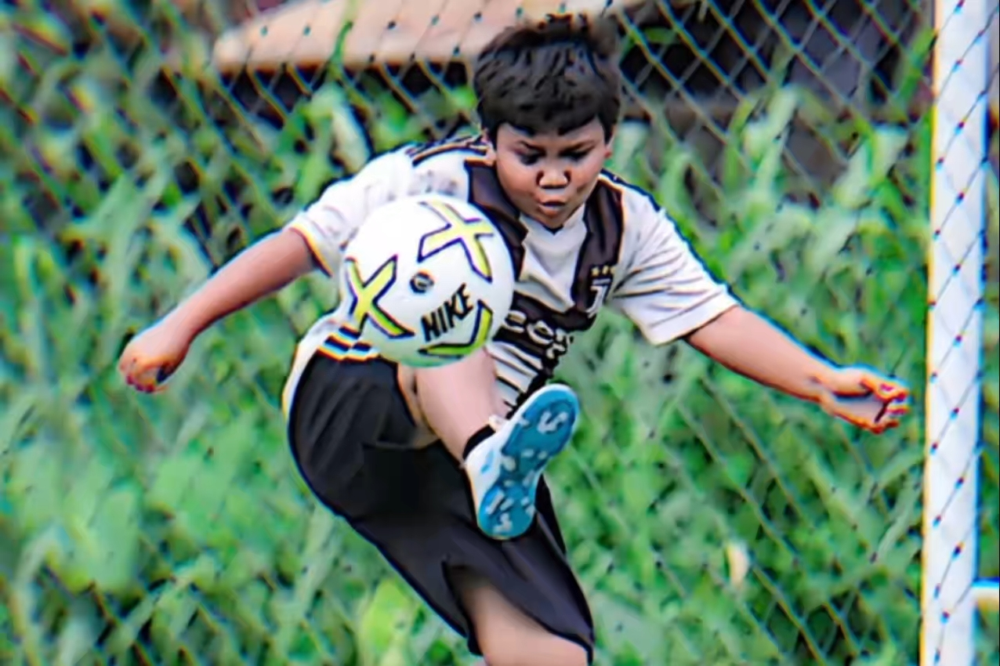
Jawahir Rizki (GK)

Muhammad Sani (GK)
Defender
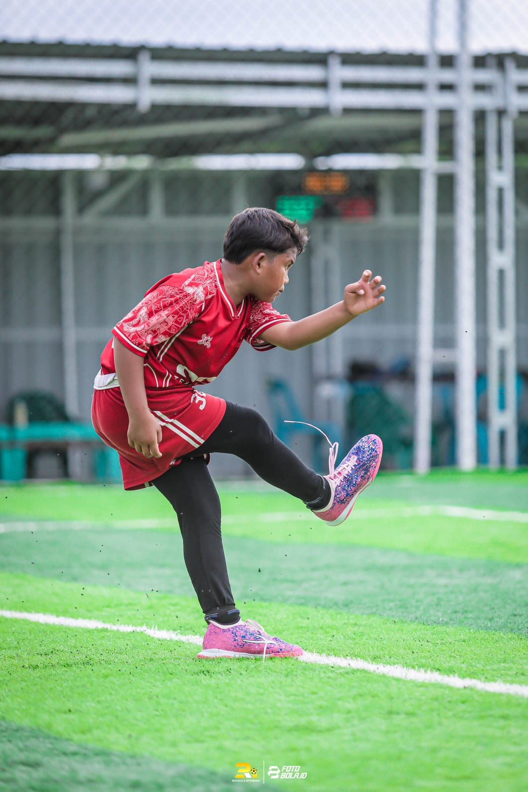
Dede Januar (CB)

Muhammad Fahri (CB)
Muhammad Reza (LWB)
? (RWB)
Defensive Midfielders
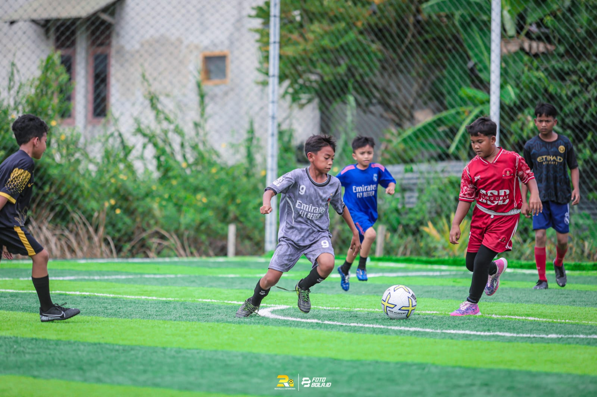
Syarif Ramadhan (DMF)
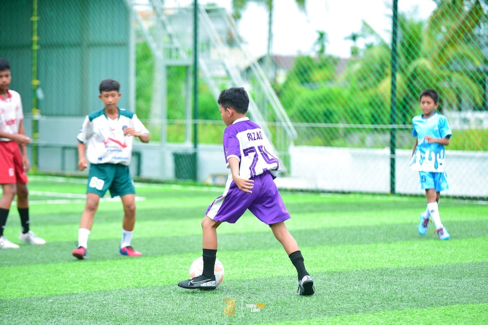
Muhammad Affrilian Lutfi (DMF)
Winger
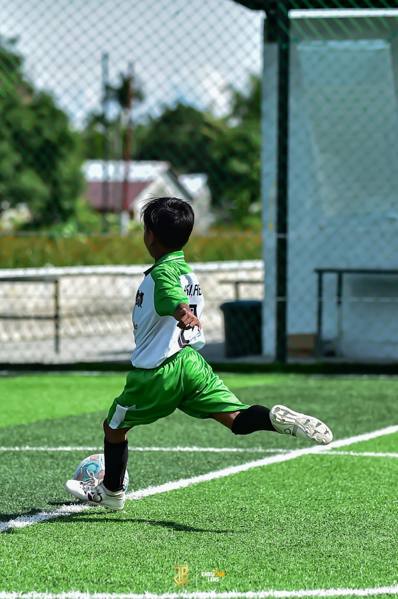
Fiki Riyandi (RW)

ZulFazelillah (LW)
Striker
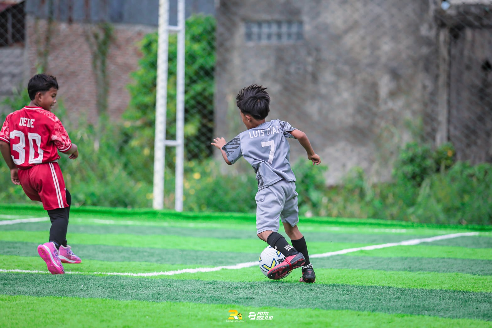
Muhammad Juan (ST)

Almuarief (ST)
Galeri Prestasi
Champion WBL
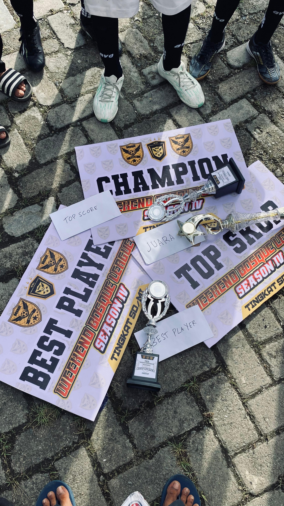
Juara 1 Tournament WBL
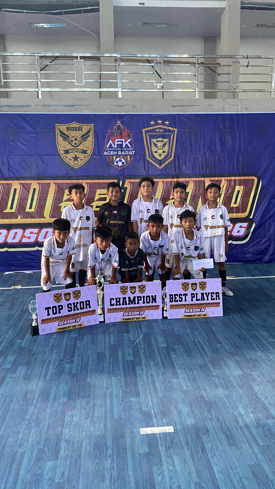
Penyerahan Piala WBL
Penghargaan Individu
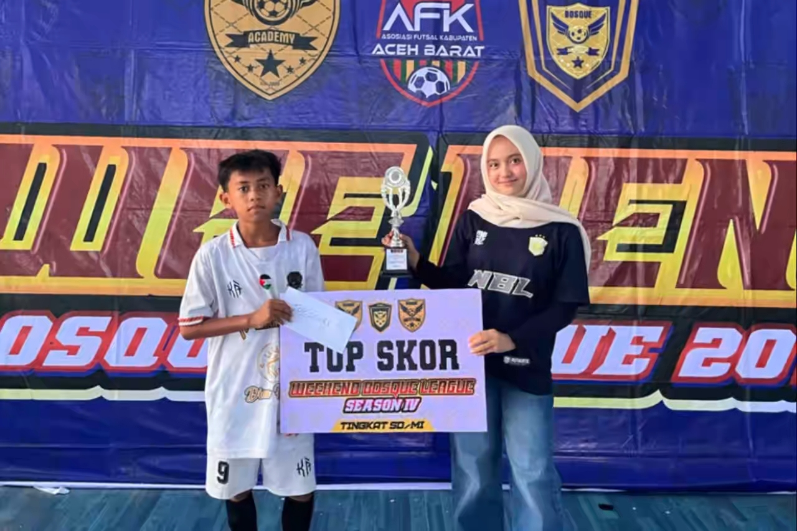
Top Score
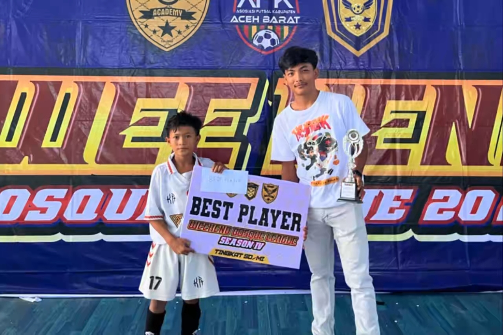
Best Player
Pengangkatan Piala
Champion 🏆